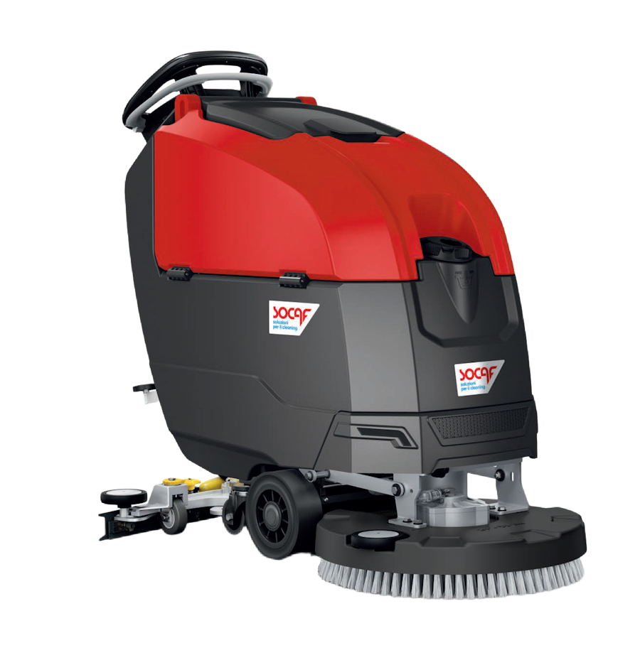

Prova a cercare zzz per vedere lo stato « nessun risultato ».
/?s=terminenoindex, follow. The SEO Framework lo imposta di serie sulle
pagine di ricerca: verificare che resti attivo.macchina, page, post.
Esclusi: sede e referenza (raggiungibili dai loro contesti).macchina deve avere
exclude_from_search = false, altrimenti i risultati principali del sito non compaiono.
macchinapost_type diverso e s ereditato dalla query di ricerca.
Alternativa: tre Listing Grid JetEngine. Nessun motore di ricerca custom, nessun plugin di ricerca.pagepostProva a cercare il nome del modello, oppure parti da una delle sei famiglie di macchine.
Chiamaci: un consulente ti aiuta a individuare la macchina giusta.